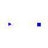
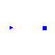
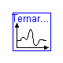
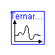
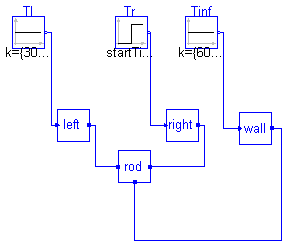
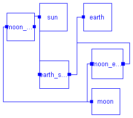

 



The models in this package are taken from Chapter 6 of: 'Introduction to Physical Modeling with Modelica' by Michael Tiller
| Name | Description |
|---|---|
| BinarySystem | A binary system |
| Body | |
| BodyAttachment | |
| CalcForce | Calculate Force on body1 due to body2 |
| Chemistry | A sample chemistry package |
| ConductingRod | |
| ConductingRod_Thermal | |
| ConductingRodWithConvection | |
| FixedTemperature | |
| FunctionVectorizing | |
| GravitationalAttraction | |
| HeatTransfer | One Dimensional Heat Transfer |
| HTProblem1 | Conducting rod with boundary conditions |
| HTProblem2 | Variation on HTProblem1 |
| Oregonator | |
| TernarySystem | Earth, Moon & Sun |
| ThermalCapacitance | Capacitance of a rod section |
| ThermalConduction | 1-D Conduction Heat Transfer |
| ThermalConvection | 1-D Convective Heat Transfer |
| ThermalNode | Thermal Connector |
BookExamples.Chapter6.BinarySystem

model BinarySystem "A binary system"
extends BookExamples.Icons.RunnableExample;
Body sun(M=1.989e+30);
Body earth(
M=5.976e+24,
init_v={0,29.29e+3,0},
init_x={152.1e+9,0,0});
GravitationalAttraction earth_sun;
equation
connect(earth_sun.b1, sun.b);
connect(earth_sun.b2, earth.b);
end BinarySystem;
BookExamples.Chapter6.Body
| Name | Default | Description |
|---|---|---|
| M | 1.0 | [kg] |
| init_v[3] | {0,0,0} | [m/s] |
| init_x[3] | {0,0,0} | [m] |
model Body
import Modelica.SIunits;
parameter SIunits.Mass M=1.0;
parameter SIunits.Velocity init_v[3]={0,0,0};
parameter SIunits.Position init_x[3]={0,0,0};
BodyAttachment b;
protected
SIunits.Position x[3](start=init_x, fixed=true);
SIunits.Velocity v[3](start=init_v, fixed=true);
SIunits.Acceleration a[3];
equation
b.x = x;
b.m = M;
v = der(x);
a = der(v);
M*a = b.f;
end Body;
connector BodyAttachment import Modelica.SIunits; SIunits.Position x[3]; flow SIunits.Force f[3]; SIunits.Mass m; end BodyAttachment;
function CalcForce "Calculate Force on body1 due to body2"
import Modelica.SIunits;
input SIunits.Position body1[3];
input SIunits.Mass M1;
input SIunits.Position body2[3];
input SIunits.Mass M2;
output SIunits.Force on_body1[3];
protected
SIunits.Distance r;
SIunits.Force F;
algorithm
r := sqrt((body1[1] - body2[1])^2 + (body1[2] - body2[2])^2 + (body1[3] -
body2[3])^2);
F := M1*M2*Modelica.Constants.G/r^2;
on_body1 := F*(body2 - body1)/r;
end CalcForce;
BookExamples.Chapter6.ConductingRod
| Name | Default | Description |
|---|---|---|
| L | 1.0 | Total length [m] |
| A | 1.0 | Cross-sectional area [m2] |
| cp | 1.0 | [J/(kg.K)] |
| rho | 1.0 | [kg/m3] |
| k | 1.0 | [W/(m.K)] |
| n | 10 | Number of sections |
| dx | L/n | [m] |
model ConductingRod
import Modelica.SIunits;
parameter SIunits.Length L=1.0 "Total length";
parameter SIunits.Area A=1.0 "Cross-sectional area";
parameter SIunits.SpecificHeatCapacity cp=1.0;
parameter SIunits.Density rho=1.0;
parameter SIunits.ThermalConductivity k=1.0;
parameter Integer n=10 "Number of sections";
ThermalNode a;
ThermalNode b;
// External connections
parameter SIunits.Length dx=L/n;
ThermalCapacitance cap[n](
each L=dx,
each A=A,
each rho=rho,
each cp=cp);
ThermalConduction c_cond[n - 1](
each L=dx,
each A=A,
each k=k);
ThermalConduction l_cond(
L=dx/2,
A=A,
k=k);
ThermalConduction r_cond(
L=dx/2,
A=A,
k=k);
equation
for i in 1:n - 1 loop
connect(c_cond[i].a, cap[i].p);
connect(c_cond[i].b, cap[i + 1].p);
end for;
connect(a, l_cond.a);
connect(l_cond.b, cap[1].p);
connect(b, r_cond.b);
connect(r_cond.a, cap[n].p);
end ConductingRod;
BookExamples.Chapter6.ConductingRod_Thermal
| Name | Default | Description |
|---|---|---|
| L | 1.0 | Total length [m] |
| A | 1.0 | Cross-sectional area [m2] |
| cp | 1.0 | [J/(kg.K)] |
| rho | 1.0 | [kg/m3] |
| k | 1.0 | [W/(m.K)] |
| n | 10 | Number of sections |
model ConductingRod_Thermal
import Thermal.Basic1D;
import Modelica.SIunits;
parameter SIunits.Length L=1.0 "Total length";
parameter SIunits.Area A=1.0 "Cross-sectional area";
parameter SIunits.SpecificHeatCapacity cp=1.0;
parameter SIunits.Density rho=1.0;
parameter SIunits.ThermalConductivity k=1.0;
parameter Integer n=10 "Number of sections";
Thermal.Interfaces.Node a;
Thermal.Interfaces.Node b;
protected
parameter SIunits.Length dx=L/n;
Basic1D.Capacitance cap[n](
each V=dx*A,
each rho=rho,
each cp=cp);
Basic1D.Conduction c_cond[n - 1](
each L=dx,
each A=A,
each k=k);
Basic1D.Conduction l_cond(
L=dx/2,
A=A,
k=k);
Basic1D.Conduction r_cond(
L=dx/2,
A=A,
k=k);
equation
for i in 1:n - 1 loop
connect(c_cond[i].a, cap[i].n);
connect(c_cond[i].b, cap[i + 1].n);
end for;
connect(a, l_cond.a);
connect(l_cond.b, cap[1].n);
connect(b, r_cond.b);
connect(r_cond.a, cap[n].n);
end ConductingRod_Thermal;
BookExamples.Chapter6.ConductingRodWithConvection
| Name | Default | Description |
|---|---|---|
| L | 1.0 | Total length [m] |
| A | 1.0 | Cross-sectional area [m2] |
| cp | 1.0 | [J/(kg.K)] |
| rho | 1.0 | [kg/m3] |
| k | 1.0 | [W/(m.K)] |
| n | 10 | Number of sections |
| dx | L/n | [m] |
| perimeter | 1.0 | [m] |
| h | 1.0 | [W/(m2.K)] |
model ConductingRodWithConvection
import Modelica.SIunits;
extends ConductingRod;
parameter SIunits.Length perimeter=1.0;
parameter SIunits.CoefficientOfHeatTransfer h=1.0;
ThermalNode ambient;
protected
parameter SIunits.Area As=perimeter*dx;
ThermalConvection conv[n](each h=h, each A=As);
equation
for i in 1:n loop
connect(cap[i].p, conv[i].a);
connect(ambient, conv[i].b);
end for;
end ConductingRodWithConvection;

model FixedTemperature Modelica.Blocks.Interfaces.InPort T(final n=1); ThermalNode d; equation d.T = T.signal[1]; end FixedTemperature;
model FunctionVectorizing
Real x1[3];
Real x2[3];
Real x3[3];
equation
x1 = sqrt({1,2,3});
x2 = mod({10,20,30}, {4,5,6});
x3 = mod({10,20,30}, 4);
end FunctionVectorizing;
BookExamples.Chapter6.GravitationalAttraction
model GravitationalAttraction BodyAttachment b1; BodyAttachment b2; equation b1.f = -CalcForce(b1.x, b1.m, b2.x, b2.m); b2.f = -b1.f; end GravitationalAttraction;
BookExamples.Chapter6.HeatTransfer
| Name | Default | Description |
|---|---|---|
| n | 10 | Number of Nodes |
| rho | 1.0 | Material Density [kg/m3] |
| c_p | 1.0 | [J/K] |
| k | 1.0 | [W/(m.K)] |
| L | 10.0 | Domain Length [m] |
model HeatTransfer "One Dimensional Heat Transfer"
extends BookExamples.Icons.RunnableExample;
import Modelica.SIunits;
// Configuration parameters
parameter Integer n=10 "Number of Nodes";
parameter SIunits.Density rho=1.0 "Material Density";
parameter SIunits.HeatCapacity c_p=1.0;
parameter SIunits.ThermalConductivity k=1.0;
parameter SIunits.Length L=10.0 "Domain Length";
// Temperature Array
SIunits.Temp_K T[n](start=fill(300, n)) "Nodal Temperatures";
// Computed parameters
protected
parameter SIunits.Length dx=L/n "Distance between nodes";
equation
// Loop over interior nodes
for i in 2:n - 1 loop
rho*c_p*der(T[i]) = k*(T[i + 1] - 2*T[i] + T[i - 1])/dx^2;
end for;
// Boundary Conditions
T[1] = if time >= 1 then 1000 else 300;
T[n] = 300;
end HeatTransfer;
BookExamples.Chapter6.HTProblem1

model HTProblem1 "Conducting rod with boundary conditions"
extends BookExamples.Icons.RunnableExample;
Modelica.Blocks.Sources.Constant Tl(k={300.0});
Modelica.Blocks.Sources.Step Tr(
height={700.0},
offset={300.0},
startTime={10.0});
FixedTemperature left;
FixedTemperature right;
ConductingRod rod(
n=10,
L=10.0,
k=1.0,
cp=1.0,
rho=1.0);
equation
connect(Tl.outPort, left.T);
connect(Tr.outPort, right.T);
connect(left.d, rod.a);
connect(right.d, rod.b);
end HTProblem1;
BookExamples.Chapter6.HTProblem2
model HTProblem2 "Variation on HTProblem1"
extends BookExamples.Icons.RunnableExample;
Modelica.Blocks.Sources.Constant Tl(k={300.0});
Modelica.Blocks.Sources.Constant Tinf(k={600.0});
Modelica.Blocks.Sources.Step Tr(
height={700.0},
offset={300.0},
startTime={10.0});
FixedTemperature left;
FixedTemperature right;
FixedTemperature wall;
ConductingRodWithConvection rod(
n=10,
L=10.0,
k=1.0,
cp=1.0,
rho=1.0,
h=0.3);
equation
connect(Tl.outPort, left.T);
connect(Tr.outPort, right.T);
connect(Tinf.outPort, wall.T);
connect(left.d, rod.a);
connect(rod.b, right.d);
connect(wall.d, rod.ambient);
end HTProblem2;

model TernarySystem "Earth, Moon & Sun"
extends BinarySystem;
Body moon(
M=7.349e+22,
init_v={0,29290 + 1020,0},
init_x={152484e+6,0,0});
GravitationalAttraction moon_earth;
GravitationalAttraction moon_sun;
equation
connect(moon_earth.b1, moon.b);
connect(moon_earth.b2, earth.b);
connect(moon_sun.b1, moon.b);
connect(moon_sun.b2, sun.b);
end TernarySystem;
BookExamples.Chapter6.ThermalCapacitance

| Name | Default | Description |
|---|---|---|
| cp | [J/(kg.K)] | |
| rho | [kg/m3] | |
| L | [m] | |
| A | [m2] |
model ThermalCapacitance "Capacitance of a rod section" ThermalNode p "Midpoint connection"; parameter Modelica.SIunits.SpecificHeatCapacity cp; parameter Modelica.SIunits.Density rho; parameter Modelica.SIunits.Length L; parameter Modelica.SIunits.Area A; protected parameter Modelica.SIunits.Volume V=A*L; equation // Conservation of energy V*cp*rho*der(p.T) = p.q; end ThermalCapacitance;
BookExamples.Chapter6.ThermalConduction

| Name | Default | Description |
|---|---|---|
| k | 1.0 | [W/(m.K)] |
| L | 1.0 | [m] |
| A | 1.0 | [m2] |
model ThermalConduction "1-D Conduction Heat Transfer" import Modelica.SIunits; // Physical parameters parameter SIunits.ThermalConductivity k=1.0; parameter SIunits.Length L=1.0; parameter SIunits.Area A=1.0; // Connectors ThermalNode a; ThermalNode b; equation a.q = A*k*(a.T - b.T)/L; b.q = -a.q; end ThermalConduction;
| Name | Default | Description |
|---|---|---|
| h | 1.0 | [W/(m2.K)] |
| A | 1.0 | [m2] |
model ThermalConvection "1-D Convective Heat Transfer" // Physical parameters import Modelica.SIunits; parameter SIunits.CoefficientOfHeatTransfer h=1.0; parameter SIunits.Area A=1.0; // Connectors ThermalNode a; ThermalNode b; equation a.q = A*h*(a.T - b.T); b.q = -A*h*(a.T - b.T); end ThermalConvection;
connector ThermalNode "Thermal Connector" Modelica.SIunits.Temp_K T(start=300); flow Modelica.SIunits.HeatFlowRate q; end ThermalNode;